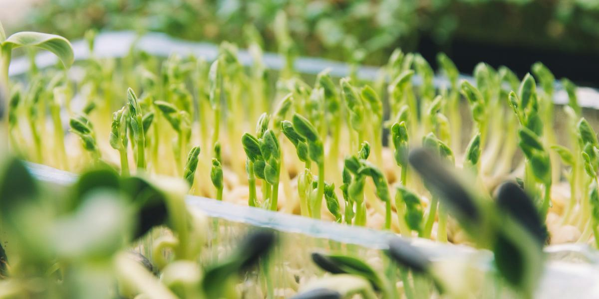

Microgreens
This page may contain affiliate links. As an Amazon Associate I earn from qualifying purchases.
Microgreens are young greens harvested at the seedling stage, usually when the first true leaves appear and the plants are about 2 inches tall. They are one of the fastest, simplest things you can grow indoors: one shallow tray, a bright window or a light, and many varieties are ready in about 1 to 3 weeks.
They fit the same small spaces as my Kratky jars: a counter, a windowsill, an RV shelf. Many people enjoy them as a fresh, flavorful topping for salads, sandwiches, eggs, and soups.
Start here
Starter kit
- Two shallow trays: one with drainage holes, one solid to water from below
- Coco coir, a seed-starting mix, or a grow mat
- Seeds sold for microgreens (radish, broccoli, or mustard to start)
- A fine-mist spray bottle
- A sunny window or an LED shop light
- Clean scissors
See my picks in the Microgreens section of the gear list.
Microgreens vs. sprouts
Sprouts are eaten seed, root and all, right after germinating. Microgreens grow a little longer in a growing medium, and you cut and eat only the stems and leaves. Extension sources note that sprouts carry a particular food-safety risk, so buy seed meant for the purpose and keep everything clean.